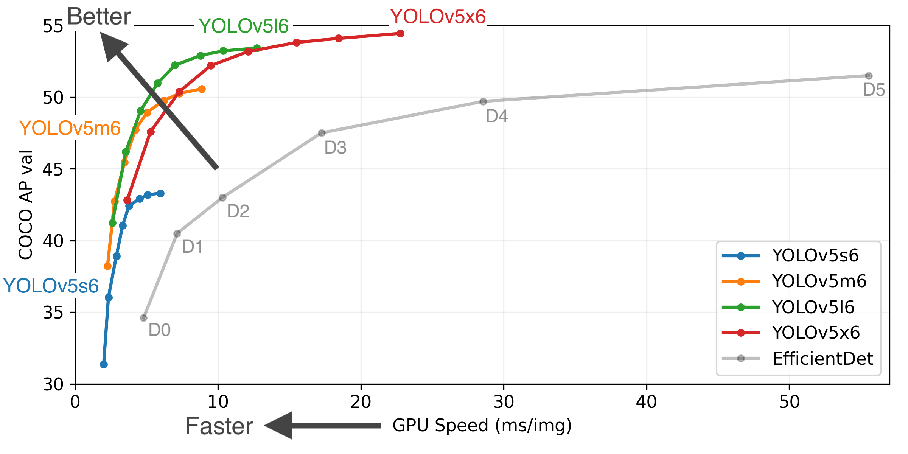
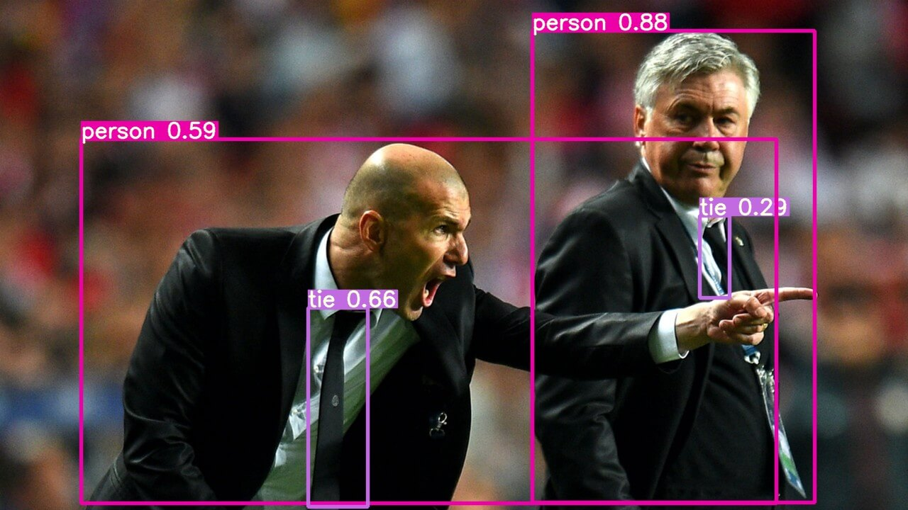
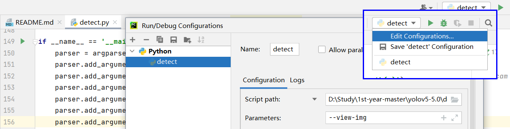

视频
仓库
课程
课程介绍
- 项目介绍及环境配置
- 如何利用 YOLOv5 进行预测
- 如何训练 YOLOv5 神经网络
- 如何制作和训练自己的数据集
- 理解预测代码组织和结构
- 理解训练代码组织和结构
- 带你重写代码(有机会的话)
项目介绍及环境配置
从 github 官网上爬取项目。
为了保证与讲解视频一致，选择 v5.0 版本（是 yolov5 的 5.0 版本，不是 yolo 的 5.0 版本），下载代码时选择 Download ZIP
查看 README.md：
Python 3.8 or later with all requirements.txt dependencies installed, including
torch>=1.7. To install run:
$ pip install -r requirements.txt
使用 Pycharm 打开项目，配环境：
1 | |
1 | |
1 | |
- 选择特定 Tags 的文件，以保持和视频中代码的一致
- 在 PyCharm 中配置对应的 Conda 环境
- 如果作者提供 requirments.txt 文件:
- 可以利用 PyCharm 自带的智能提示进行安装
- 或者利用
pip install-r requirements.txt指令进行安装
- 如果作者没有提供 requirments.txt 文件
- 根据运行报错信息，百度，手动安装缺少的库
如何利用 YOLOv5 进行预测（一）
在 README.md 中可以看到如何导入训练好的模型文件对图像进行预测：
detect.pyruns inference on a variety of sources, downloading models automatically from the latest YOLOv5 release and saving results toruns/detect.
2
3
4
5
6
7$ python detect.py --source 0 # webcam
file.jpg # image
file.mp4 # video
path/ # directory
path/*.jpg # glob
'https://youtu.be/NUsoVlDFqZg' # YouTube video
'rtsp://example.com/media.mp4' # RTSP, RTMP, HTTP stream
官方文档推荐用命令行设置相应的 parser 参数开始预测，但是也可以使用 pycharm 启动。
打开 detect.py:
if __name__ == '__main__': 中会有包 import argparse 中的 parser 参数，通过命令行运行这个文件可以设置这些参数：
1 | |
运行后会根据 --weights 的默认值 yolov5s.pt 下载模型文件：https://github.com/ultralytics/yoloy5/releases/download/y5.0/yolov5s.pt，也可以换其他的模型：`yolov5m.pt`、`yolov5l.pt`、`yolov5x.pt`。

然后根据 --source 的默认值 data/images 读取输入。
生成的 --project 的默认值 runs/detect 将预测后的结果保存至相应的文件夹。
1 | |

坑点：
- 项目工程是 5.0 的，但是默认会下载最新的 7.0 的模型，导致不兼容
- pytorch 太新也会导致不兼容：YOLOV5 训练好模型测试时出现问题：AttributeError: ‘Upsample‘ object has no attribute ‘recompute_scale_factor‘的解决方法_yolov5 upsample_佐咖的博客-CSDN博客
如何利用 YOLOv5 进行预测（二）
这章主要讲了剩下的参数的用法。
可以在 pycharm 中的 Edit Configurations... 中 Parameters 中设置参数。

-
--img-size在导入图片时，会把图片缩放至一定大小的图片作为输入。 -
--conf-thres置信阈值，只有检测结果大于该阈值的才会在输出中展示。 -
--iou-thres- IOU：交并比，Intersection over Union
- NMS：非极大值抑制，Non Max Suppression
- NMS（non_max_suppression） - 知乎 (zhihu.com)。在预测任务中，会出现很多冗余的预测框。通过NMS操作可以有效的删除冗余检测的结果。非极大值抑制（NMS）顾名思义就是抑制不是极大值的元素，搜索局部的极大值。大于该值的框框将被合并。
-
--device使用设备，可选 cuda 或 cpu -
--view-img预测后是否显示图片 -
--save-txt预测后会把框框的坐标信息保存到 txt 中 -
--save-conf预测后将置信度保存到 txt 中 -
--nosave是否保存预测结果图 -
--classes设置只保留某一部分类别, 形如 0 或者 0 2 3, 使用--classes = n, 则在路径runs/detect/exp*/下保存的图片为 n 所对应的类别, 此时需要设置 data -
--agnostic-nms进行 NMS 去除不同类别之间的框, 默认 False -
--augmentTTA测试时增强/多尺度预测 -
--visualize是否可视化网络层输出特征 -
--update如果为True,则对所有模型进行strip_optimizer操作,去除pt文件中的优化器等信息,默认为False -
--project保存测试日志的文件夹路径 -
--name保存测试日志文件夹的名字, 所以最终是保存在project/name中 -
--exist_ok是否重新创建日志文件,False时重新创建文件
一点小补充
1 | |
这两行代码就是解析之前设置的参数用。
训练YOLOv5模型（本地）
运行 train.py 就可以本地训练 YOLOv5 模型。
1 | |
提示推荐你安装 wandb ，据说是个比 Tensorboard 更好用的可视化工具。
YOLOv5 的超参文件见 data/hyp.finetune.yaml（适用 VOC 数据集）或者 hyo.scrach.yaml（适用 COCO 数据集）文件。
| 名称 | 值 | 描述 |
|---|---|---|
| lr0 | 0.00447 | 学习率 |
| lrf | 0.114 | 余弦退火超参数 |
| momentum | 0.873 | 学习率动量 |
| weight_decay | 0.00047 | 权重衰减系数 |
| giou | 0.0306 | giou 损失的系数 |
| cls | 0.211 | 分类损失的系数 |
| cls_pw | 0.546 | 分类 BCELoss 中正样本的权重 |
| obj | 0.421 | 有无物体损失的系数 |
| obj_pw | 0.972 | 有无物体 BCELoss 中正样本的权重 |
| iou_t | 0.2 | 标签与 anchors 的 iou 阈值 iou training threshold |
| anchor_t | 2.26 | 标签的长 h 宽 w/anchor 的长 h_a 宽 w_a 阈值, 即 h/h_a, w/w_a 都要在(1/2.26, 2.26)之间 anchor-multiple threshold |
| fl_gamma | 0.0 | 设为 0 则表示不使用 focal loss(efficientDet default is gamma=1.5) |
| hsv_h | 0.0154 | 色调 |
| hsv_s | 0.9 | 饱和度 |
| hsv_v | 0.619 | 明度 |
| degrees | 0.404 | 旋转角度 |
| translate | 0.206 | 水平和垂直平移 |
| scale | 0.86 | 缩放 |
| shear | 0.795 | 剪切 |
| perspective | 0.0 | 透视变换参数 |
| flipud | 0.00756 | 上下翻转 |
| fliplr | 0.5 | 左右翻转 |
| mixup | 0.153 | mixup 系数 |
从 if __name__ == '__main__': 中看到设置的参数：
1 | |